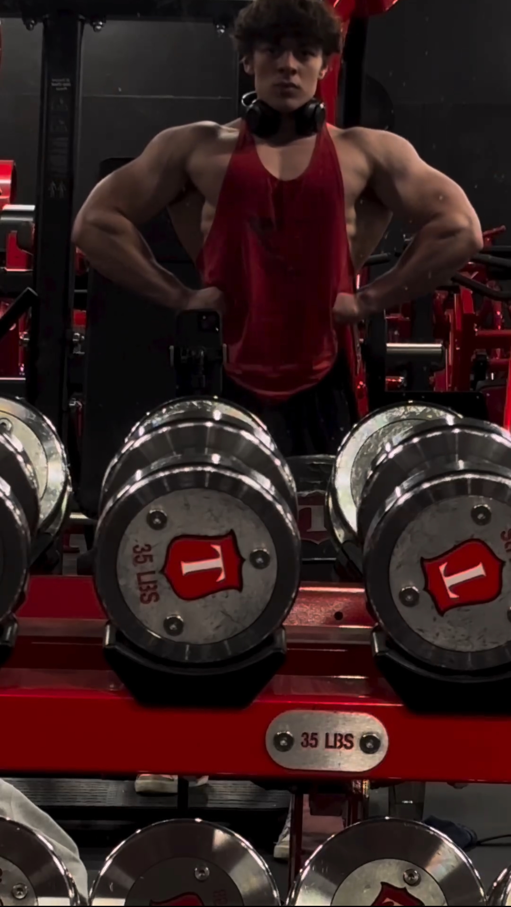

Bodybuilding and Discipline
Outside of work, I've dedicated nearly four years to bodybuilding. The discipline, consistency, and focus it takes to build strength and grow physically has translated into my academic and professional life. Just like in lifting, I believe progress is earned through effort and resilience—values I bring into my UX research, data analysis, and all the projects I take on.
